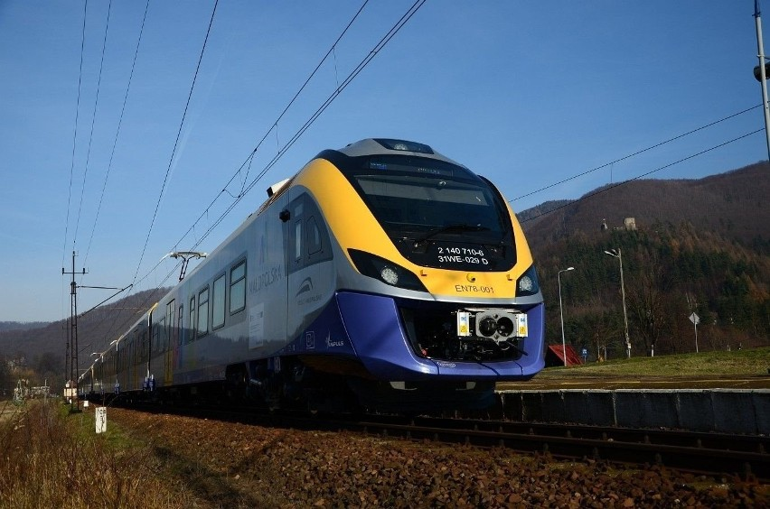
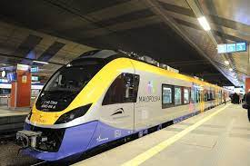
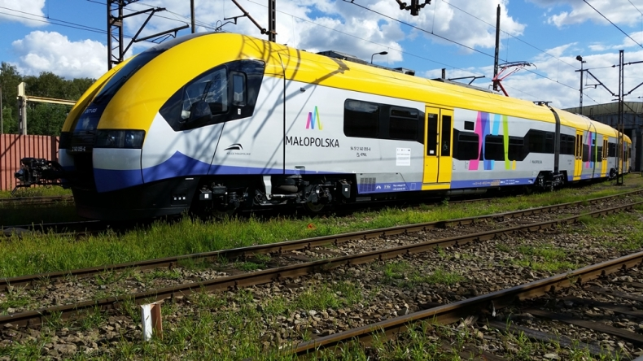
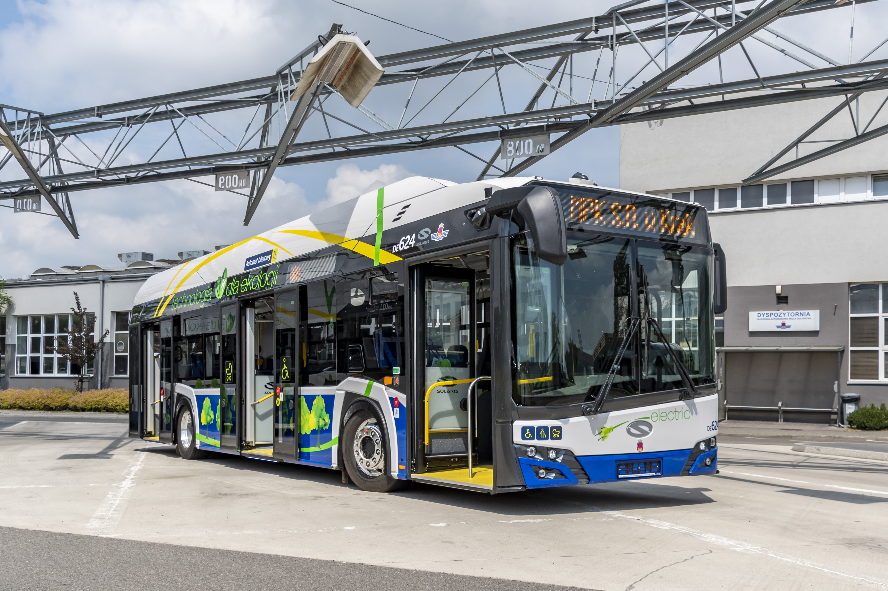
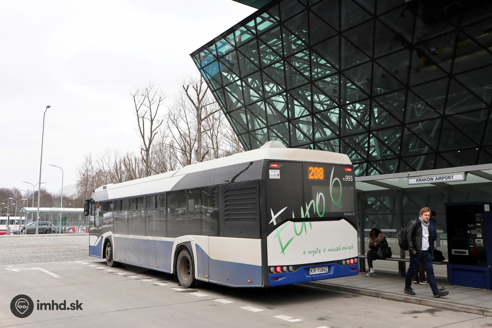
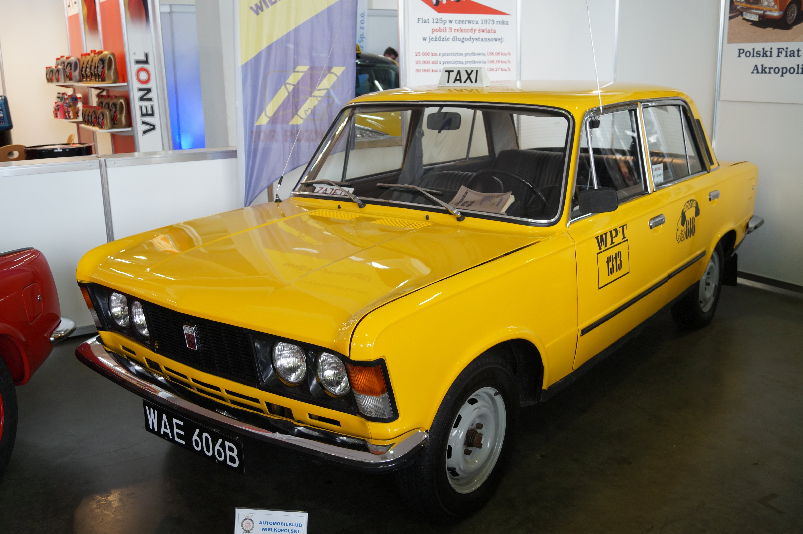
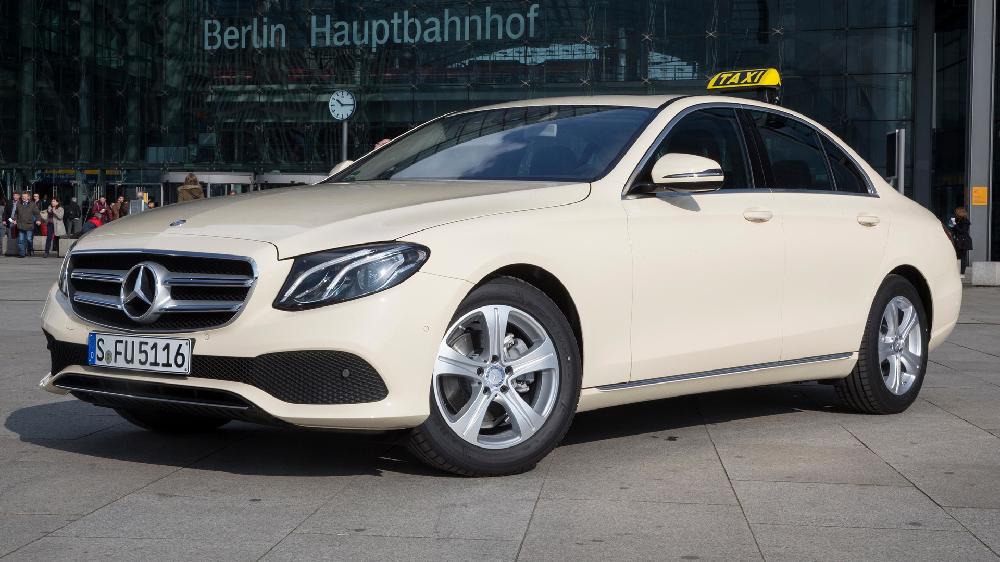
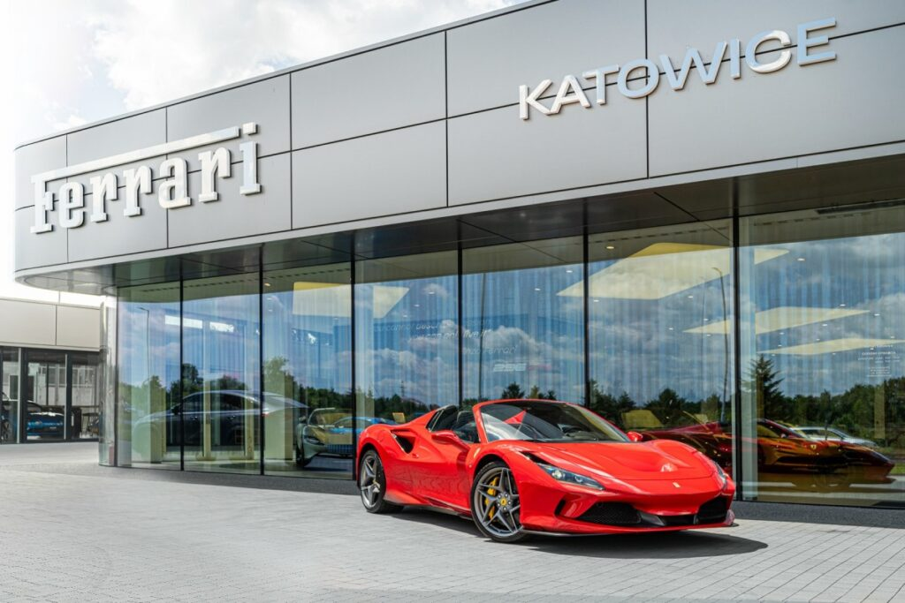

Transport z i na Lotnisko
Kolej
Szybkie połączenia kolejowe zapewniają bezpośredni dojazd z lotniska do centrum Krakowa. Pociągi kursują co 30 minut, a podróż trwa około 20 minut.



Autobusy
Linie autobusowe miejskie i dalekobieżne umożliwiają łatwy dojazd do różnych części Krakowa i innych miast. Przystanki znajdują się tuż przy terminalu.


Taksówki
Taksówki są dostępne 24/7 przy wyjściu z terminala. Zapewniają szybki i komfortowy dojazd do dowolnego miejsca w Krakowie.


Wynajem Samochodów
Na lotnisku dostępne są liczne wypożyczalnie samochodów, oferujące szeroki wybór pojazdów w konkurencyjnych cenach.
